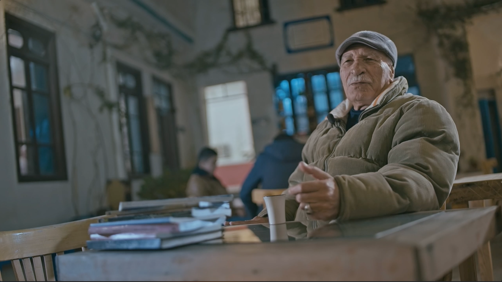
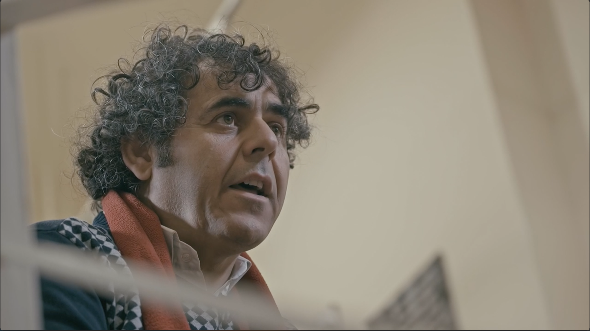
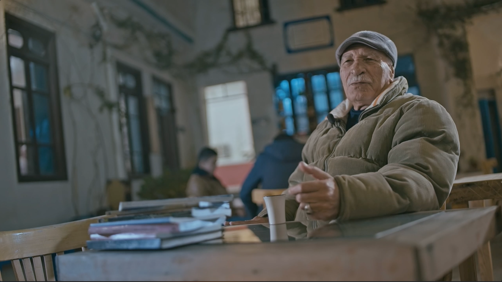
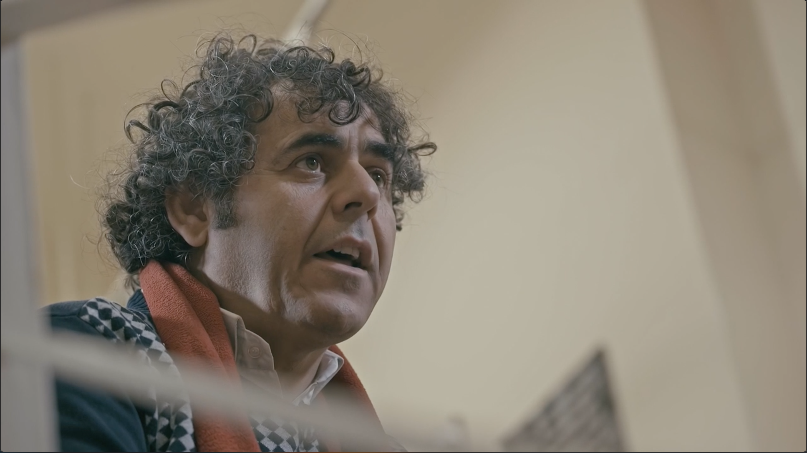
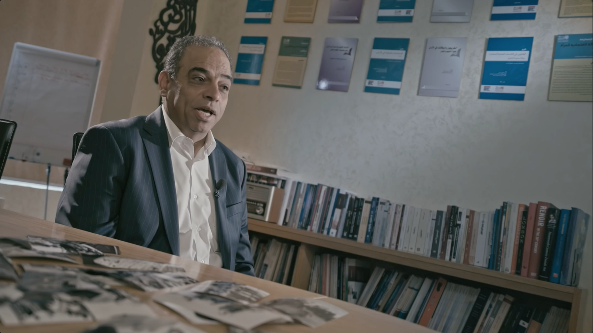
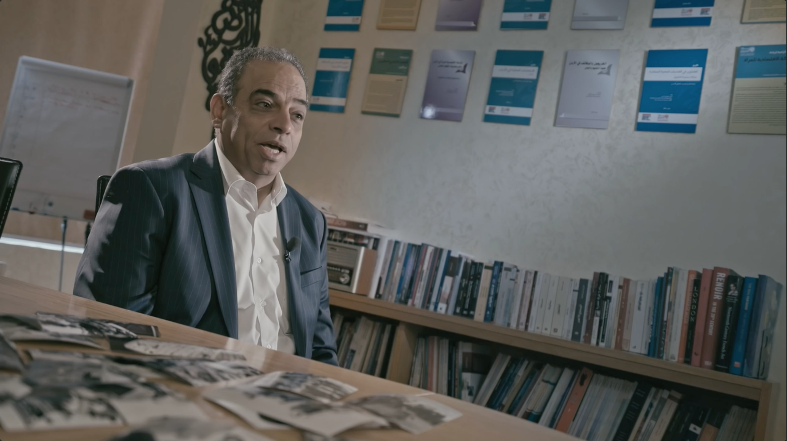

Description:
A film that highlights the story of a Palestinian man who was subjected to injustice in one of the refugee camps. He was resisting using weapons, but after the death of his close friend, he turned to resisting using a brush and became a high-caliber painter who draws, sculpts, and composes everything related to the cause of his homeland.

 



 
